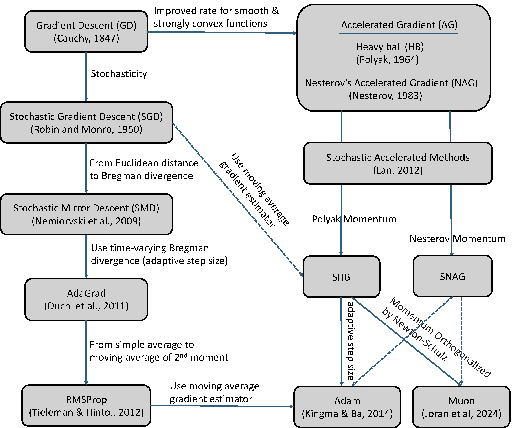

Section 6.1 Stochastic Optimization Framework
For practitioners who may skip Chapter 3, Chapter 4, and Chapter 5, we first provide a brief introduction to the stochastic optimization framework commonly used for deep learning. We also highlight the challenges in solving advanced machine learning problems introduced in Chapter 2 and summarize the key ideas behind the solution methods presented in Chapter 4 and Chapter 5.
The standard procedure for implementing a stochastic optimization algorithm typically involves computing a vanilla gradient estimator, followed by updating the model parameters using a step of an optimizer. We present a meta-algorithm in Algorithm 23, along with four classical optimizers: SGD, Momentum, Adam, and AdamW.
Algorithm 23: Stochastic Optimization Framework of DL
The Meta Algorithm
- Set the learning rate schedule \(\eta_t\)
- for \(t = 1,\cdots, T\) do
- Compute a vanilla gradient estimator \(\mathbf{z}_t\)
- Update \(\mathbf{w}_{t+1}\) by calling the update of SGD, Momentum, Adam, or AdamW optimizer
- end for
The SGD optimizer update
- Update \(\mathbf{w}_{t+1} = \mathbf{w}_t - \eta_t \mathbf{z}_t\)
The Momentum optimizer update
- Update \(\mathbf{v}_{t} = \beta_1\mathbf{v}_{t-1} + (1-\beta_1)\mathbf{z}_t\) \(\diamond\) the MA gradient estimator
- Update \(\mathbf{w}_{t+1} = \mathbf{w}_t - \eta_t \mathbf{v}_{t}\)
The Adam optimizer update
- Update \(\mathbf{v}_{t} = \beta_1\mathbf{v}_{t-1} + (1-\beta_1)\mathbf{z}_t\) \(\diamond\) the MA gradient estimator
- Update \(\mathbf{s}_{t} = \beta_2\mathbf{s}_{t-1} + (1-\beta_2)(\mathbf{z}_t)^2\)
- Update \(\hat{\mathbf{v}}_{t} = \mathbf{v}_{t}/(1-\beta_1^t)\)
- Update \(\hat{\mathbf{s}}_{t} = \mathbf{s}_{t}/(1-\beta_2^t)\)
- Update \(\mathbf{w}_{t+1} = \mathbf{w}_t - \eta_t \frac{\hat{\mathbf{v}}_{t}}{\sqrt{\hat{\mathbf{s}}_{t}}+\epsilon}\) \(\diamond\)\(\epsilon\) is a small constant
The AdamW optimizer update
- Update \(\mathbf{v}_{t} = \beta_1\mathbf{v}_{t-1} + (1-\beta_1)\mathbf{z}_t\) \(\diamond\) the MA gradient estimator
- Update \(\mathbf{s}_{t} = \beta_2\mathbf{s}_{t-1} + (1-\beta_2)(\mathbf{z}_t)^2\)
- Update \(\hat{\mathbf{v}}_{t} = \mathbf{v}_{t}/(1-\beta_1^t)\)
- Update \(\hat{\mathbf{s}}_{t} = \mathbf{s}_{t}/(1-\beta_2^t)\)
- Update \(\mathbf{w}_{t+1} = \mathbf{w}_t - \eta_t \left(\frac{\hat{\mathbf{v}}_{t}}{\sqrt{\hat{\mathbf{s}}_{t}}+\epsilon}+\lambda \mathbf{w}_t\right)\) \(\diamond\)\(\lambda\) is a weight-decay constant
The Momentum method represents a key milestone (as further discussed in the next subsection). The stochastic momentum method originates from the Heavy-ball (HB) method, whose stochastic version (SHB) has the following update for solving \(\min_\mathbf{w} F(\mathbf{w}):=\mathbb{E}_\zeta[f(\mathbf{w}; \zeta)]\):
\[\begin{align}\label{eqn:SHB} \mathbf{w}_{t+1} = \mathbf{w}_t - \eta \nabla f(\mathbf{w}_t; \zeta_t) + \beta_1(\mathbf{w}_t - \mathbf{w}_{t-1}), \end{align}\]
where \(\beta_1\in(0,1)\) is the momentum parameter. While we utilize a single stochastic gradient \(\nabla f(\mathbf{w}_t; \zeta_t)\) for illustrative purposes, practical applications generally rely on mini-batch estimation. In Section 4.3, we show it is equivalent to the following update with moving average gradient estimator:
\[\begin{equation}\label{eqn:ma} \begin{aligned} &\mathbf{v}_t = \beta_1 \mathbf{v}_{t-1} + (1-\beta_1) \nabla f(\mathbf{w}_t; \zeta_t)\\ &\mathbf{w}_{t+1} = \mathbf{w}_t - \eta' \mathbf{v}_t. \end{aligned} \end{equation}\]
Update (\(\ref{eqn:SHB}\)) is equivalent to (\(\ref{eqn:ma}\)) if \(\eta'(1-\beta_1) = \eta\). In PyTorch, the Momentum method is implemented by the following update:
\[\begin{equation}\label{eqn:ma-PyTorch-moment} \begin{aligned} &\mathbf{v}_t = \beta_1 \mathbf{v}_{t-1} + \nabla f(\mathbf{w}_t; \zeta_t)\\ &\mathbf{w}_{t+1} = \mathbf{w}_t - \eta \mathbf{v}_t, \end{aligned} \end{equation}\]
which is equivalent to (\(\ref{eqn:SHB}\)). One key insight from the convergence analysis of the Momentum method (\(\ref{eqn:ma}\)) (cf. Theorem 4.3) is that it ensures the averaged estimation error of the moving-average gradient estimators \(\{\mathbf{v}_t\}\) converge to zero.
Thanks to well-developed deep learning frameworks such as PyTorch,
implementing training code for deep neural networks has become
relatively straightforward. The standard training pipeline is shown in
Figure 6.1. The Dataset module
allows us to get a training sample, which includes its input and
potentially output. The Data Sampler module (typically
wrapped within the DataLoader module) provides tools to
sample a mini-batch of examples for training at each iteration. The
Model module allows us to define different deep models. The
Mini-batch Loss module defines a loss function on the
selected mini-batch data for backpropagation. The Optimizer
module implements methods for updating the model parameter given the
computed gradient from backpropagation. Most essential functions are
already available in PyTorch. In practice, users often only need to
define a function to compute their mini-batch losses. By calling
loss.backward(), a mini-batch stochastic gradient, serving
as a vanilla gradient estimator, is computed automatically.

6.1.1 Milestones of Stochastic Optimization
While the Adam optimizer has become a standard in machine learning as of 2025, it has deep roots in the innovations of stochastic optimization before the deep learning era. Below, we briefly discuss key milestones of stochastic optimization that have impact on the Adam method.
Stochasticity. The fundamental concept of gradient descent (GD), dating back to Cauchy (1847), uses the full dataset’s gradient to take a step in the steepest direction. Introduced by Robbins & Monro (1951), SGD improves upon GD by using only a small batch of data (or even a single data point) to estimate the gradient, significantly speeding up training on large datasets.
Acceleration. To improve the convergence rate of GD, Polyak (1964) proposed the Heavy-ball (HB) method, which itself originates from the second-order Richardson method for solving a system of linear equations. While Polyak only proved a faster rate of local convergence than GD for smooth and strongly convex problems, Nemirovski & Yudin (1977) proved the first nearly optimal rate for general smooth and strongly convex problems. Their method was inspired by the conjugate gradient method for solving quadratic problems and needs to solve a 2-dimensional optimization problem using the method of centers of gravity every step. Later, Nesterov (1983) derived a simple form of accelerated gradient method, which is now known as Nesterov’s accelerated gradient (NAG) method.

The original update form of the NAG method is given by:
\[\begin{equation}\label{eqn:nag1} \begin{aligned} &\mathbf{u}_{t+1} = \mathbf{w}_t - \eta \nabla F(\mathbf{w}_t),\\ &\mathbf{w}_{t+1} = \mathbf{u}_{t+1} + \beta_1 (\mathbf{u}_{t+1} - \mathbf{u}_t). \end{aligned} \end{equation}\]
It is equivalent to
\[\mathbf{w}_{t+1} = \mathbf{w}_t - \eta \nabla F(\mathbf{w}_t)+ \beta_1 ((\mathbf{w}_t - \eta \nabla F(\mathbf{w}_t)) - (\mathbf{w}_{t-1} - \eta \nabla F(\mathbf{w}_{t-1}))).\]
Comparing with the HB method (\(\ref{eqn:SHB}\)), the momentum term is changed from \(\beta(\mathbf{w}_t - \mathbf{w}_{t-1})\) to \(\beta (\mathbf{u}_{t+1} - \mathbf{u}_t)\).
If we let \(\mathbf{w}_{t+1}=\mathbf{w}_t - \eta \mathbf{v}_t\), then the NAG update is equivalent to
\[\begin{equation}\label{eqn:nag2} \begin{aligned} &\mathbf{v}_t = \beta_1 \mathbf{v}_{t-1} +\nabla F(\mathbf{w}_t)+\beta_1 (\nabla F(\mathbf{w}_t) - \nabla F(\mathbf{w}_{t-1}))\\ &\mathbf{w}_{t+1} = \mathbf{w}_t - \eta\mathbf{v}_t. \end{aligned} \end{equation}\]
This is similar to (\(\ref{eqn:ma-PyTorch-moment}\)) except that an error correction term \(\beta (\nabla F(\mathbf{w}_t) - \nabla F(\mathbf{w}_{t-1}))\) is added to the gradient estimator update.
We can also make the updates in (\(\ref{eqn:nag1}\)) or (\(\ref{eqn:nag2}\)) stochastic, leading to the stochastic NAG (SNAG) method. In particular, if we use a stochastic gradient estimator \(\nabla f(\mathbf{w}_t; \zeta_t)\) in (\(\ref{eqn:nag1}\)), we have the following update:
\[\begin{equation}\label{eqn:snag1} \begin{aligned} &\mathbf{u}_{t+1} = \mathbf{w}_t - \eta \nabla f(\mathbf{w}_t;\zeta_t),\\ &\mathbf{w}_{t+1} = \mathbf{u}_{t+1} + \beta_1 (\mathbf{u}_{t+1} - \mathbf{u}_t). \end{aligned} \end{equation}\]
If we use stochastic gradient estimators \(\nabla f(\mathbf{w}_t; \zeta_t)\) and \(\nabla f(\mathbf{w}_{t-1}; \zeta_t)\) in (\(\ref{eqn:nag2}\)), we have the following update:
\[\begin{equation}\label{eqn:snag2} \begin{aligned} &\mathbf{v}_t = \beta_1 \mathbf{v}_{t-1} +\nabla f(\mathbf{w}_t;\zeta_t)+\beta_1 (\nabla f(\mathbf{w}_t; \zeta_t) - \nabla f(\mathbf{w}_{t-1}; \zeta_t))\\ &\mathbf{w}_{t+1} = \mathbf{w}_t - \eta\mathbf{v}_t. \end{aligned} \end{equation}\]
The difference between the two variants lies in that (\(\ref{eqn:snag2}\)) needs to compute two stochastic gradient estimators at \(\mathbf{w}_t\) and \(\mathbf{w}_{t-1}\) per-iteration. However, interested readers can show that the update in (\(\ref{eqn:snag2}\)) with a variable change is equivalent to the STORM update as presented in Section 4.3.2 for optimizing \(F(\mathbf{w})=\mathbb{E}_{\zeta}[f(\mathbf{w}; \zeta)]\).
Lan (2012) pioneered the development and analysis of stochastic accelerated gradient methods, achieving the optimal rates in both deterministic and stochastic regimes for convex problems. Its update is slightly different from the NAG update. Yang et al. (2016) is the first work to prove the convergence of stochastic NAG and stochastic HB methods for non-convex optimization.
Adaptive step sizes. The technique of utilizing coordinate-wise adaptive step sizes was pioneered by AdaGrad, a method whose analysis is rooted in the framework of Stochastic Mirror Descent (SMD). Both AdaGrad and SMD are thoroughly examined in Chapter 3. RMSProp, appeared in a course lecture (Tieleman & Hinton, 2012), moved from AdaGrad’s simple average of the second moment (squared gradients) to a moving average of the second moment. The moving average estimator has a long history in stochastic optimization; see (Ermoliev and Wets, 1988)[Sec. 6.2.3]. Finally, RMSProp leads to the current standard, the Adam method (Kingma & Ba, 2015), which combines the moving average of the first moment (similar to SHB) with the moving average of the second moment (similar to RMSProp). AdamW is a variant of Adam, which decouples weight decay from gradient-based updates.
Recently, a new optimizer named Muon (Jordan et al., 2024) has emerged, specifically designed to optimize matrix-structured parameters, such as the weight matrices between neural network layers. In contrast, conventional optimizers typically treat these parameters as flattened vectors, potentially overlooking their inherent structural properties.
Let \(W_t\) denote a matrix-structured parameter at the \(t\)-th iteration. The Muon update is given by:
\[\begin{equation}\label{eqn:PyTorch-moment} \begin{aligned} &M_t = \beta_1 M_{t-1} + \nabla f(W_t; \zeta_t)\\ & (U_t, S_t, V_t) = \text{SVD}(M_t)\\ &W_{t+1} = W_t - \eta_t U_t V_t^{\top}. \end{aligned} \end{equation}\]
In practice, the Singular Value Decomposition (SVD) is often replaced by a more computationally efficient Newton-Schulz matrix iteration. This process produces an approximate matrix \(O_t = U_t S'_t V_t^{\top}\), where \(S'_t\) is diagonal with \(S'_t[i,i] \sim \text{Uniform}(0.5, 1.5)\). The weight update is then applied as \(W_{t+1} = W_t - \eta_t O_t\).
Summary: The evolution of stochastic optimization, which has had a major impact on modern AI (see Figure 6.2), can be characterized by five key shifts in algorithm design:
From Full Gradient to Stochastic Gradient (Batch Size): Switched from using the full dataset’s gradient (GD) to using noisy stochastic gradients (SGD) for faster iteration speed.
From Gradient Descent to Accelerated Gradient Methods (Momentum): The optimization technique was enhanced by introducing a momentum term (like HB or NAG) to achieve an improved convergence rate for smooth convex functions, while still using the full gradient.
From Euclidean Distance to Bregman Divergence (Geometry): Switched the underlying distance metric used for updates from the Euclidean distance to a Bregman divergence (SMD).
From Static Step Size to Adaptive Step Size (Preconditioning): Switched from a constant or manually decaying learning rate to one that is scaled by past gradient magnitudes (AdaGrad).
From a Mini-batch gradient estimator to a Moving Average gradient estimator (Error reduction): Switched from a simple mini-batch gradient estimator to a moving average gradient estimator (SHB, Adam).
6.1.2 Limitations of Existing Optimization Framework
The standard stochastic optimization algorithms and their analyses
rest on a critical assumption: that the mini-batch stochastic gradient
is an unbiased estimator of the true gradient. As discussed in Chapter 4, this assumption breaks down in the
case of compositional functions of the form \(f(g(\mathbf{w}))\), where \(f\) is a deterministic non-linear function
and \(g\) is a stochastic function. In
such cases, the gradient of the mini-batch loss \(f(g(\mathbf{w}; \mathcal{B}))\), where
\(g(\mathbf{w}; \mathcal{B})\) is an
unbiased estimator of \(g(\mathbf{w})\)
with a mini-batch \(\mathcal{B}\),
yields a biased estimate of the true gradient. Specifically, calling
loss.backward() on the mini-batch loss will return a
gradient of \(\nabla
f(g(\mathbf{w};\mathcal{B})) \nabla g(\mathbf{w}; \mathcal{B})\),
which is inherently biased. The method that directly uses this biased
gradient estimator for SGD update is referred to as biased SGD (BSGD).
However, since the estimation error is inversely proportional to the
batch size, small batches can lead to large optimization errors.
According to Lemma 2.1, such errors
can negatively impact the generalization performance of the learned
model.
To address this challenge, Chapter 4 and Chapter 5 introduce solution methods tailored to different families of compositional objectives. The key ideas underlying these algorithms concern (i) how the vanilla gradient estimator \(\mathbf{z}_t\) is computed in Step 3 of Algorithm 23, and (ii) how the estimator error is further reduced through the use of moving-average (MA) estimators \(\mathbf{v}_{t}\) as in Step 1 of the Momentum optimizer or more advanced variance-reduction techniques. In the following sections, we will present their applications to various complex and advanced machine learning problems, with a focus on the presentation of the novel vanilla gradient estimators, which allow us to integrate them into the standard optimization schemes such as Momentum or AdamW for non-convex deep learning problems.